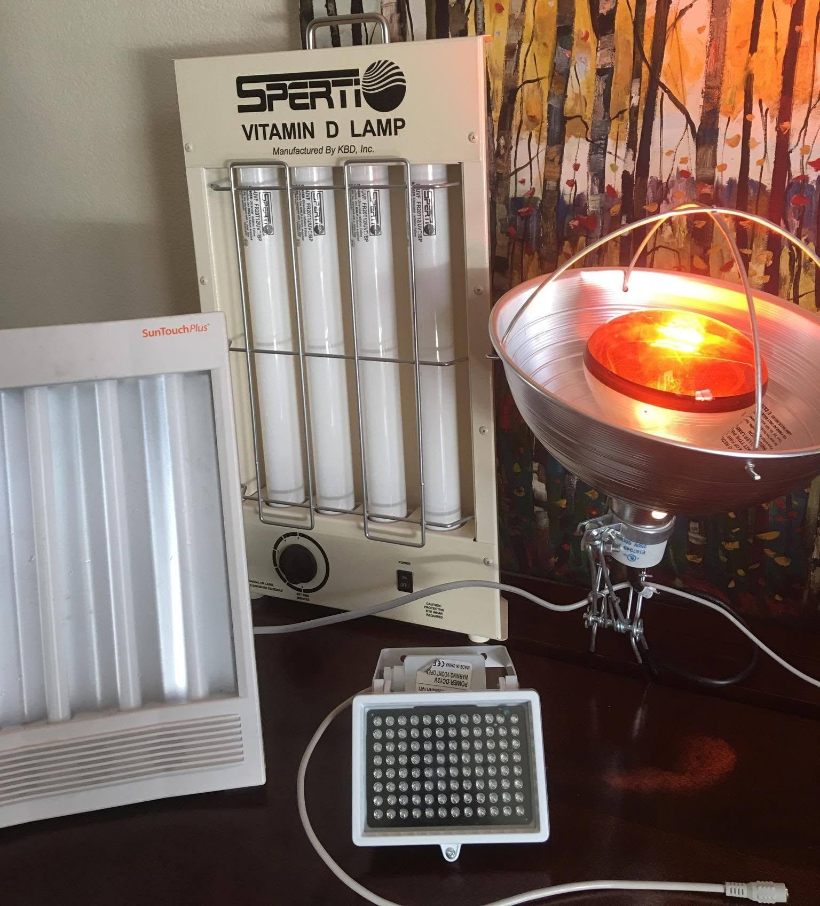

Most brain hacks don't survive contact with evidence. Three have survived years of my own use and a fair amount of reading. Each is cheap, likely safe when used sensibly, and has real studies behind it:
- Coffee, a couple of times a day. Essential.
- Bright light in the morning: 10,000 lux for about 30 minutes. Great.
- Near-infrared light on the forehead: one minute every other day. For me, magical.
I researched each one for a long time before buying anything. Here is what the studies say, how I use each, and where the risks are. I'm not your doctor: if you have a heart, eye or mood condition, talk to one before trying any of this.
1. Coffee: the essential one
Caffeine is the best-studied cognitive enhancer we have, and it works. It blocks adenosine, the molecule that builds up while you're awake and makes you sleepy. A 2016 review of military and occupational research found that doses of roughly 40 to 300 mg reliably improve alertness, vigilance, attention and reaction time. Effects on memory and higher reasoning are less consistent, and the boost is biggest when you're short on sleep.
A couple of cups a day is about 200 mg, comfortably under the FDA's 400 mg daily level for most healthy adults.
Watch the dose. I used to warn people that caffeine causes arrhythmias and deaths. The first half turns out to be mostly a myth; the second is real. Among 386,000 UK Biobank participants, each extra daily cup was linked to a 3% lower arrhythmia risk. A randomized trial in the NEJM found coffee did not increase extra beats in the heart's upper chambers, but it did raise ventricular extra beats by about half. If you're prone to palpitations, that matters.
The deaths come from concentrated caffeine. A single teaspoon of pure caffeine powder holds as much as 28 cups of coffee, and the FDA notes seizures can start around 1,200 mg taken quickly. So drink coffee, enjoy it, and skip the powders, pills and stacked energy drinks. Please don't kill yourself.
Watch the clock. In one sleep study, 400 mg taken six hours before bed cut sleep by more than an hour, and participants didn't even notice. Lost sleep erases everything coffee gives you, so keep it to the morning and early afternoon.

My light shelf: the SunTouch Plus 10,000-lux box (left), the $40 near-infrared illuminator (front) and a broadband infrared heat lamp (right). I gave my vitamin D lamp away after starting vitamin D supplements, and thinking that UVA/B might cause skin aging.
2. Morning bright light: the great one
A 10,000-lux light box is, I think, the most underrated brain hack there is. Sit in front of it for about 30 minutes in the morning and it's as energizing as a strong coffee, without the jitters. I used one daily for three to four years, and I live in sunny California.
The mechanism is well understood. Light-sensing cells in the retina report straight to the suprachiasmatic nucleus, the master clock in your hypothalamus. Bright morning light tells that clock the day has begun: melatonin shuts off, tonight's sleep gets scheduled, and alertness rises. A systematic review of 59 studies found that brighter white light reliably raises alertness, though effects on complex tasks were mixed.
Jet lag is where I saw the biggest benefit. Left alone, your body clock catches up slowly, and an eastward trip can take a week or more to adjust. Well-timed bright light can shift it by up to 1.5 to 2 hours a day. For me, morning sessions after landing made the new time zone feel normal almost immediately.
The mood evidence is stronger still:
- Depression. A meta-analysis in the American Journal of Psychiatry found light therapy's effect sizes comparable to antidepressant drugs, for seasonal and nonseasonal depression alike. In a randomized trial in JAMA Psychiatry, 30 minutes of 10,000-lux morning light put 44% of patients with nonseasonal depression into remission, versus 30% on placebo.
- ADHD. In an open trial of 29 adults with ADHD, three weeks of morning light cut both self-rated and objectively measured symptoms. The best predictor of improvement was the body clock shifting earlier, not a lift in mood. Many people with ADHD are night owls, and morning light pulls them back.
How I used it:
- Mornings only. Use it soon after waking. Evening light pushes your clock later and wrecks sleep.
- Make it effortless. I kept mine in the bathroom and ran it while I got ready and shaved. Breakfast or email works too.
- Don't stare. Let the light reach your eyes from an angle while you look at something else, and sit at the distance the box is rated for. Brightness falls off fast with distance.
- Start short. Begin with 10 to 15 minutes and build to 30 to avoid headaches and eyestrain.
Mine is a SunTouch Plus; any UV-filtered 10,000-lux box from a reputable maker will do.
Who should be careful. Morning light can tip people with bipolar disorder into hypomania; in one pilot study, three of four bipolar patients on morning light did. If that's you, do this only with your psychiatrist, who may prefer midday light. If you have retinal disease or take light-sensitizing drugs, ask your eye doctor first.
3. Near-infrared light on the forehead: the magical one
This is the least proven—and most risky—of the three and, for me, the most powerful. For about a year and a half I held an 850 nm, 96-LED infrared lamp against my forehead for one minute every other day. I believe it made me permanently smarter. The device cost about $40 (purchased from Amazon as a garage lamp).
Some context. I started when I had just taken a new job and felt my brain had stalled after years of intense keto, fasting and calorie restriction. The effect was large, and within weeks the lamp felt indispensable. Eventually I stopped because I no longer needed it. That is one person's experience, not a trial, so weigh it accordingly.
Why light can reach your brain. Near-infrared light passes through skin and skull far better than visible light. Inside neurons it is absorbed by cytochrome c oxidase, a key enzyme in mitochondria. Like a workout, the light is a small stress, and the brain answers with repair and growth: more blood flow, less inflammation, more BDNF. As Michael Hamblin, then at Harvard, has documented, the response is hormetic. It is exercise for the brain, so the dose has to be minimal. The field calls it transcranial photobiomodulation. I first heard about it in Hamblin's interview with Joe Cohen of SelfHacked.
What the studies show.
- Healthy adults. In the first placebo-controlled study, from the University of Texas, a 1,064 nm laser on the forehead improved reaction time, working memory and mood in healthy volunteers, with mood gains lasting two weeks. Follow-ups found better executive function and tied the gains to higher oxygenation of the prefrontal cortex.
- Dementia. In a randomized, double-blind trial of 60 patients, a home-use helmet, six minutes twice a day for eight weeks, raised scores on the standard dementia screen (MMSE) by about 4.8 points; caregivers reported better mood and sleep. One co-author's company makes the helmet. Durham University's Paul Chazot discusses these results here.
- The bigger picture. A 2024 systematic review in GeroScience of 37 studies found better working memory and inhibition in healthy older adults, and better general cognition in Alzheimer's and mild impairment. A 2023 meta-analysis of 11 randomized trials found a moderate effect on global cognition in older adults with impairment. In mice, near-infrared light even helped the brain flush out toxic waste through its lymphatic drainage and restored maze performance.
The honest summary: most trials are small, doses vary wildly, and almost none test cheap 850 nm security lamps like mine. Promising, not proven.
How I did it.
- Device. An 850 nm, 96-LED infrared illuminator sold for security cameras, plus a 12 V power adapter. It is not a medical device. These lamps have a light sensor so they only switch on in the dark; cover it with tape.
- Dose. Hold it against your forehead and move it slowly across the front of your head: one minute, every other day. SelfHacked recommended two to four minutes; one minute was enough for me. Contact is strongest; at a distance you would need longer. More is not better: Hamblin notes the response is biphasic, so too much light can cancel the benefit.
- Eyes. Keep them closed and the lamp aimed away from them. At 850 nm the light looks like a faint red glow, so your blink reflex won't protect you, and enough near-infrared can damage the cornea and retina.
- Heat. If it gets warm, stop. I also tried a broadband infrared heat lamp, the sauna kind, on my head; it was uncomfortable and I couldn't tell the dose.
The frontier I'm not touching
Electrical and magnetic brain stimulation are fascinating. In 2016 the US Air Force reported that a weak current through the scalp (tDCS) improved multitasking in a small study. Maybe near-infrared worked the same way, via hormesis.
Magnetic stimulation is even more striking. Stanford's accelerated TMS protocol put nearly 80% of patients with treatment-resistant depression into remission within five days and was FDA-cleared in 2022. Tim Ferriss calls it the most impressive mental-health intervention he has seen in a decade.
But these are treatments you get in a clinic, not hacks. DIY tDCS kits are unregulated, and the wrong placement or current can backfire. I wouldn't try either anytime soon.
All three of my hacks are potent. Coffee is essential, morning light can be great, and near-infrared, for me, was magical. None of them replaces sleep, so start low and check with your doctor if anything in your history gives you pause. The rest is up to you.
Comments